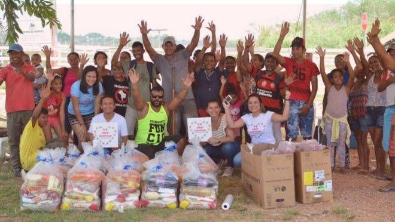

Sobre a ONG
A ONG Esperança atua para transformar vidas por meio de projetos sociais, ações comunitárias e iniciativas voltadas para educação, alimentação e meio ambiente.

Missão
Nossa missão é promover ações sociais que contribuam para uma sociedade mais justa, solidária e inclusiva.
Visão
Construir uma sociedade onde todas as pessoas tenham oportunidades e qualidade de vida.
Valores
- Solidariedade
- Respeito
- Inclusão
- Transparência
- Compromisso social
História e conquistas
A ONG Esperança foi criada com o objetivo de apoiar a comunidade por meio de ações sociais, educacionais e ambientais.
- Mais de 500 pessoas beneficiadas.
- Centenas de voluntários participantes.
- Projetos de educação, alimentação e meio ambiente.
- Campanhas comunitárias realizadas durante o ano.
Indicadores de impacto
Transparência
A ONG Esperança busca apresentar informações sobre seus projetos, voluntários e recursos de forma clara.
Relatórios
- Relatório de atividades sociais.
- Relatório de arrecadação e doações.
- Relatório de projetos realizados.
Documentos públicos
Os documentos abaixo são demonstrativos para o projeto acadêmico.
Notícias e atualizações
Novas ações sociais
A ONG Esperança ampliou suas atividades comunitárias com novos projetos sociais.
Campanha de arrecadação
A organização iniciou uma nova campanha para arrecadar alimentos para famílias da comunidade.
Ações ambientais
Voluntários participaram de atividades de plantio de árvores e conscientização ambiental.
Newsletter
Cadastre seu e-mail para receber novidades da ONG.
Imprensa
Área destinada a comunicados, notícias institucionais e releases da organização.
Release institucional
A ONG Esperança desenvolve projetos sociais voltados para educação, alimentação e preservação ambiental.